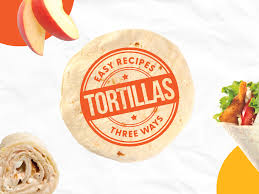

Tortilla Shells recipe

- 1/2 cups cold water
- 1 cup all-purpose flour
- 1/2 cup cornmeal
- 1/4 teaspoon salt
- 1 egg
- Vegetable oil
Instructions
- Heat 8-inch skillet over medium-low heat just until hot
- Grease skillet if necessary. (To test skillet, sprinkle with few drops water.If bubbles skitter around, heat is just right.)
- Heat water, flour, cornmeal, salt and egg with hand beater until smooth
- Pour scant /4 cup of the batter into skillet; immediately rotate skillet until batter forms very thin tortilla about 6 inches in diameter
- Cook tortilla until dry around edge, about 2 minutes
- Turn and cook other side until golden, about 2 minutes longer
- Heat oil (1 inch) in 3-quart saucepan to 375
- Slide tortilla into oil
- Fold in half with tongs or two forks and hold so 1-inch space remains between halves of tortilla
- Fry, turning occasionally, until crisp and golden brown; drain on paper towel